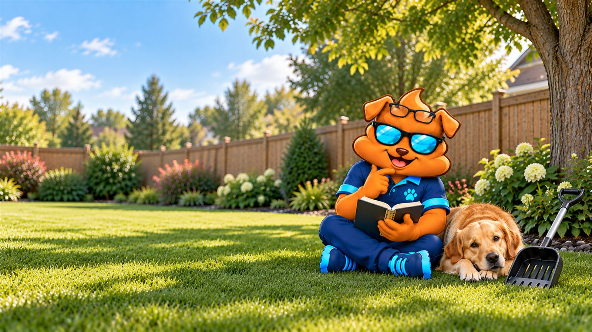
The Purge Pros Yard Guide
Good yards. Good reads.
Straightforward guidance for cleaner yards, smoother service visits, and life with dogs across Central Indiana.
-
 46 guides
Short reads on pricing, first visits and yard care
46 guides
Short reads on pricing, first visits and yard care
-
 Four topics
Yard care, property, service and seasonal guides
Four topics
Yard care, property, service and seasonal guides
-
 Written for here
Indianapolis-area yards and Central Indiana weather
Written for here
Indianapolis-area yards and Central Indiana weather
-
 4.9 on Google
Read all 43 reviews
4.9 on Google
Read all 43 reviews
Explore the Yard Guide
Make the next visit easier
Browse practical guidance on pricing, first visits, yard care, service details, and local conditions.
46 guides, newest up top. Helpful answers for real yards.19 on yard care. Toys, turf, gates and mowing day.6 for trickier properties. Two gates? A shared lawn? Start here.16 on how service works. Prices, schedules and first visits.5 for Indiana weather. Leaves, snow, thaw and mud.
The rest of the shelf
 Service guides
Service guides
Per-Visit or Monthly Quote? How to Compare the Math Fairly
Normalize scope, visit counts and first-cleanup terms so a per-visit quote and a monthly-looking quote can be compared fairly.
Read the guide 
 Yard care
Yard care
Outdoor Toys and Movable Obstacles: A Weekly Yard Reset Routine
A repeatable weekly reset for toys, bowls, hoses and lightweight furniture that keeps dog-use areas easier to inspect and access.
Read the guide 
 Property guides
Property guides
Two Gates and a Side Passage: How to Make a Useful Access Map
Map two gates and a side passage so every agreed dog-use section has a physical route, clear instructions and fewer surprises on service day.
Read the guide 
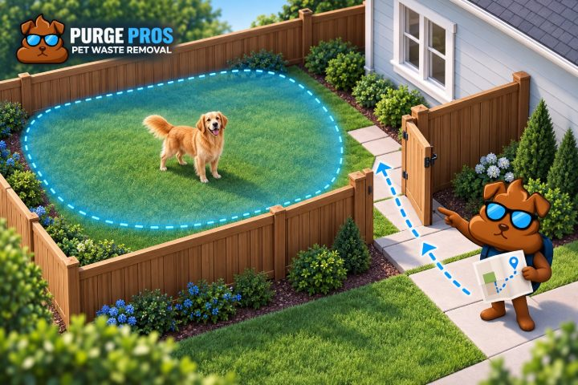
Yard careInvisible Fences and Dog Waste Service: Plan the Physical Access Too
An invisible boundary can guide a dog, but a cleanup plan still needs a physical gate, route, pet arrangement and current access instructions.
Read the guide 
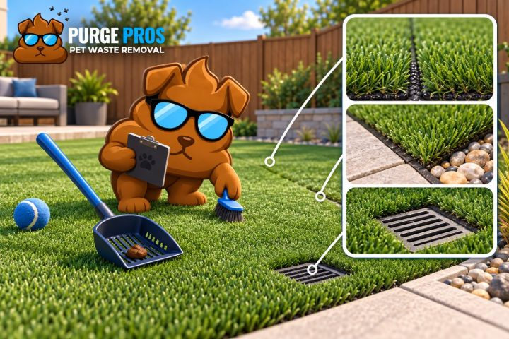
Yard careArtificial Turf Dog Waste Pickup: What It Covers and What It Does Not
Set clear expectations for dog-waste pickup on artificial turf, including edges, seams, access and separate surface-care questions.
Read the guide 
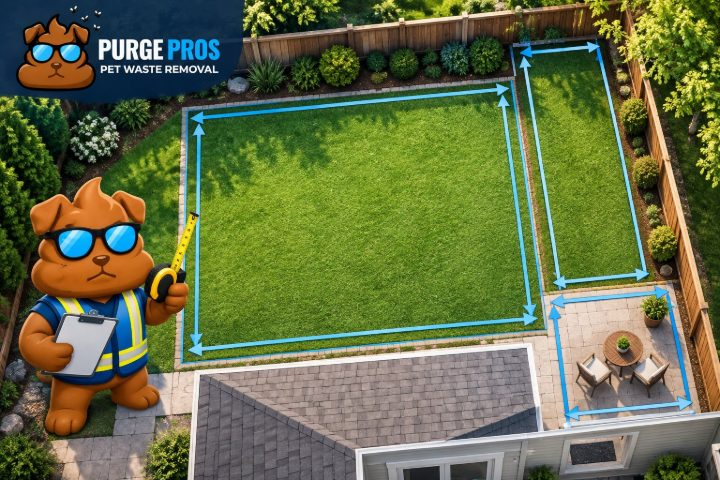
Property guidesHow to Measure a Scoopable Outdoor Area With Simple Rectangles
Use a few simple rectangles to estimate the outdoor sections that need dog-waste pickup, with a worked example and practical scope checks.
Read the guide 
 Service guides
Service guides
What a Gate-Closure Photo Can Tell You After a Scoop Visit
Learn how to read a gate-closure photo after dog poop cleanup, what it shows, and which access or service questions still need a message to the team.
Read the guide 
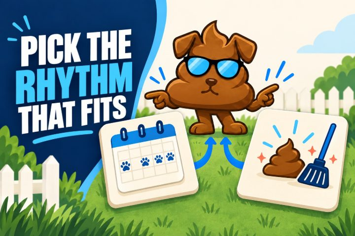
Service guidesWeekly or One-Time Dog Poop Cleanup: Which Fits Your Yard?
Compare recurring and one-time dog poop cleanup for your Indianapolis-area yard: service scope, starting prices and route review.
Read the guide 
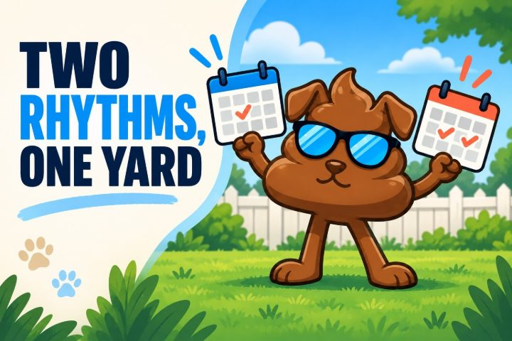
Service guidesWeekly vs. Twice-Weekly Dog Poop Cleanup: Which Fits Your Yard?
Compare weekly and twice-weekly poop scooping by yard use, buildup between visits, and total weekly cost before choosing a recurring plan.
Read the guide 
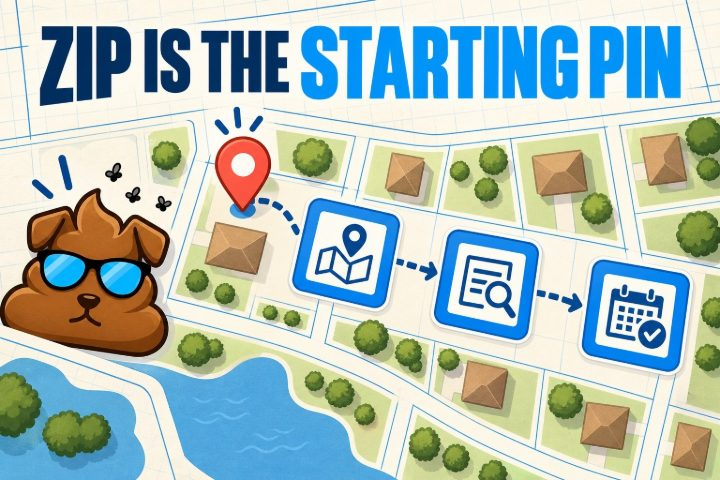
Service guidesWhy a ZIP Check Is Only the First Step in Dog Waste Service Coverage
Understand the difference between a supported ZIP, an address review and a confirmed service day when requesting dog waste removal.
Read the guide 
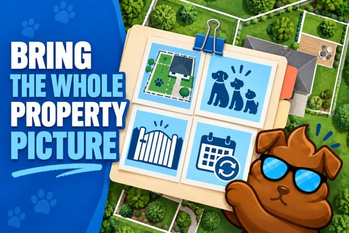
Property guidesWhat to Include in a Custom Dog Waste Removal Estimate Request
Prepare a useful custom cleanup request with property sections, dog count, access, frequency and scope details that support an accurate estimate.
Read the guide 
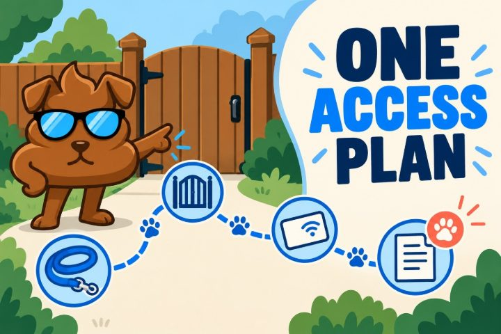
Yard careDog Sitters and Yard Service: A Shared Access Checklist
Coordinate a dog sitter and yard cleanup team with one clear plan for entrances, pet arrangements and changes to service-day access.
Read the guide 
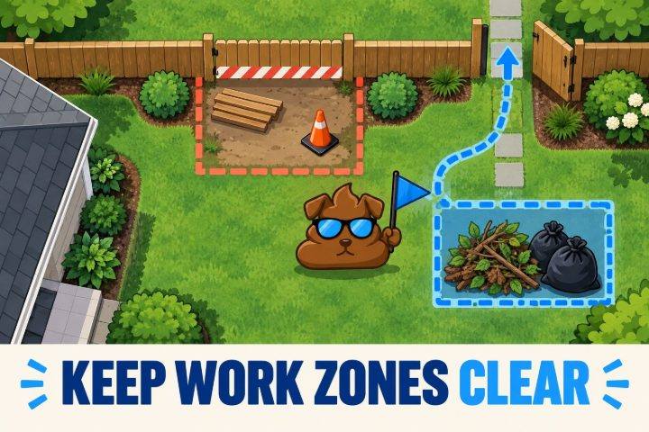
Yard careYard Cleanup During Fence Repairs or Landscaping: What to Coordinate
Plan around a fence repair or landscaping project by confirming access, restricted areas, pet arrangements and any changed cleanup scope.
Read the guide 
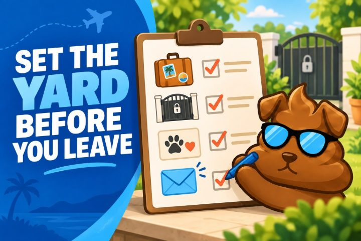
Service guidesGoing on Vacation? Questions to Settle About Yard Service
Before a trip, confirm whether dogs remain at home, how the yard is accessed and how any pause or service change will be handled.
Read the guide 
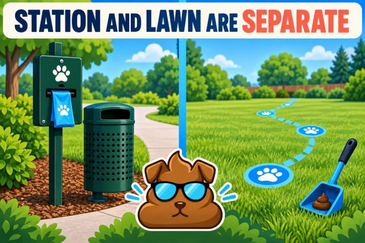
Property guidesDog Waste Stations for Shared Green Spaces: Planning the Basics
Plan a shared-space dog waste station around location, bag supplies, bin servicing and responsibility without confusing it with lawn cleanup.
Read the guide 
Coordinating Lawn Care and Dog Waste Pickup Without Mixed Signals
Coordinate mowing, yard access and dog waste pickup with clear responsibilities, realistic timing and updates when a lawn-care visit changes.
Read the guide 
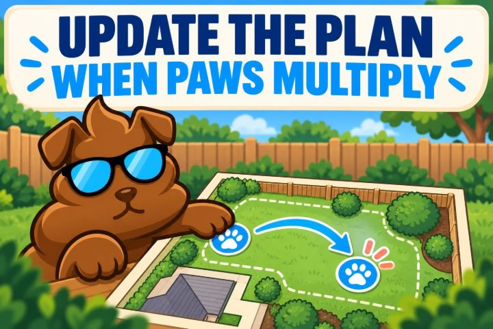
Service guidesAdding a Second Dog? Recheck Your Yard Cleanup Plan
Update dog count, cleanup sections and visit frequency when another dog joins the household so your service plan matches the yard's current use.
Read the guide 
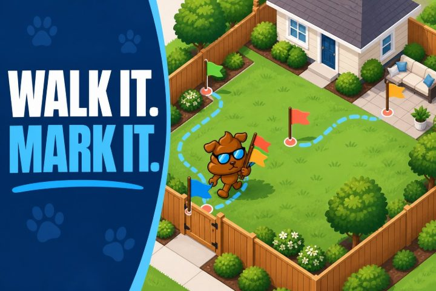
Service guidesA Yard Walk-Through Checklist for an Accurate Cleanup Request
Walk your yard before requesting cleanup to identify service sections, entrances, surface types and details that a starting price cannot describe.
Read the guide 
 Service guides
Service guides
From Price Check to Confirmed Dog Waste Service: What Happens Next
See how Purge Pros moves from ZIP and price checks to request review, service-day confirmation and approved payment setup without booking confusion.
Read the guide 
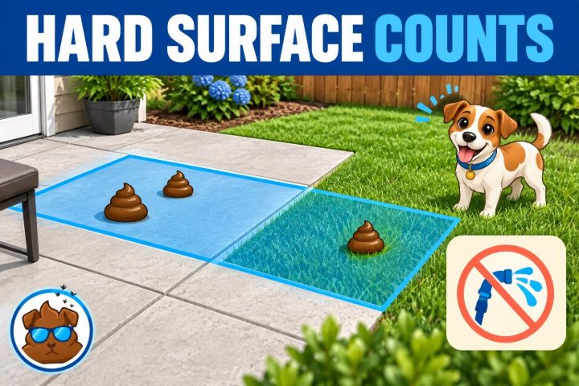
Yard careDog Waste on Patios: Set the Right Pickup Expectations
Include patios and other hard surfaces in the requested pickup scope, while separating waste collection from washing, stain removal and treatment.
Read the guide 
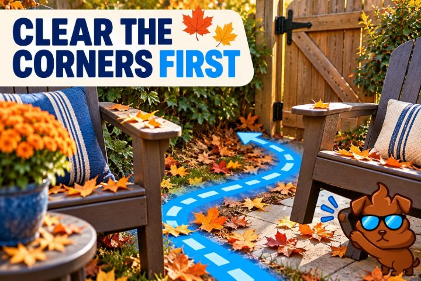
Seasonal yard careFall Backyard Close-Up: Furniture, Leaves and Dog Waste
Organize fall backyard tasks around waste pickup, furniture moves, leaf cover and usable access so the dog's outdoor space stays manageable.
Read the guide 
Dog Poop Removal Cost in Indianapolis: What Shapes Your Quote
See what changes dog poop removal pricing in Indianapolis, how per-visit plans work, and what to compare before requesting a cleanup.
Read the guide 
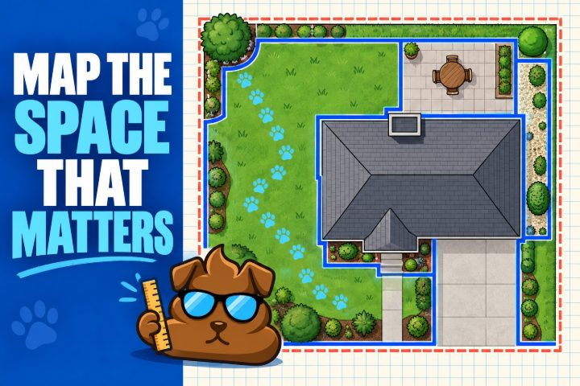
Service guidesYard Size vs. Lot Size: What Counts for Poop Scooping?
Learn how to estimate the outdoor areas that need dog waste cleanup, including side yards, patios, and separate service sections.
Read the guide 
 Service guides
Service guides
How to Prepare for Your First Pooper Scooper Visit
A practical first-visit checklist covering yard access, dog arrangements, service areas, and what to confirm before cleanup day.
Read the guide 
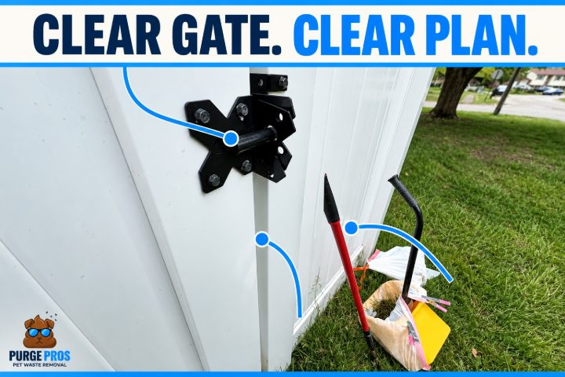
Yard careGate Access for Dog Waste Removal: A Simple Checklist
Make yard access easier with clear gate instructions, pet arrangements, and closure checks before your dog waste removal visit.
Read the guide 
 Service guides
Service guides
Do I Need to Be Home for Dog Poop Cleanup?
Plan dog waste cleanup while you are away: agree on access, secure pets, confirm communication, and know what happens after the visit.
Read the guide 
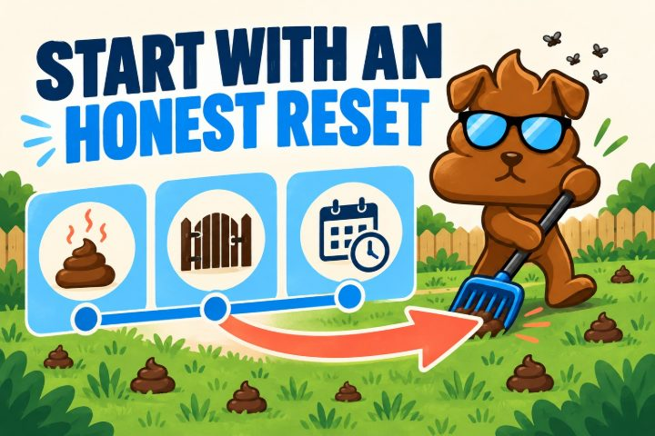
Yard careBehind on Scooping? How to Tackle a Yard Full of Dog Poop
A manageable plan for built-up dog waste: define the cleanup area, handle access, choose ongoing care, and understand first-visit pricing.
Read the guide 
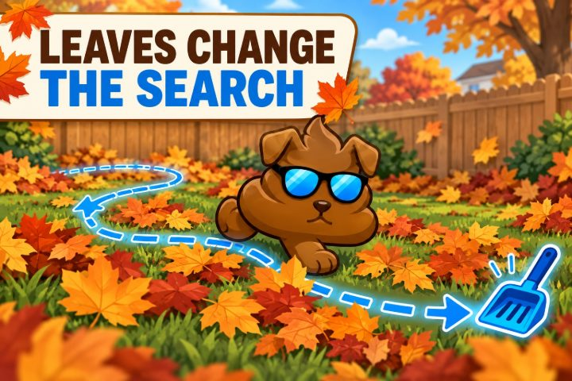
Seasonal yard careFall Dog Poop Cleanup: Managing Waste Under Leaves
Keep fall yard cleanup manageable when leaves hide dog waste. Learn a practical order for scooping, leaf work, and regular service.
Read the guide 
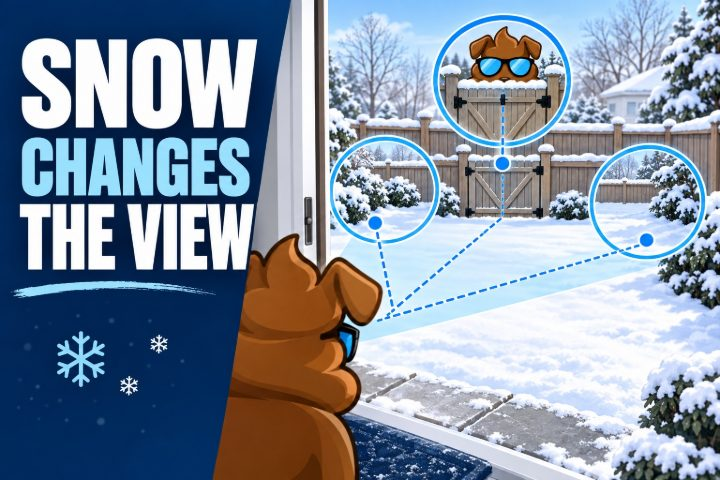
Seasonal yard careWinter Dog Poop Cleanup in Central Indiana
Plan winter dog waste cleanup around visibility, gate access, snow, and changing yard conditions in Central Indiana.
Read the guide 
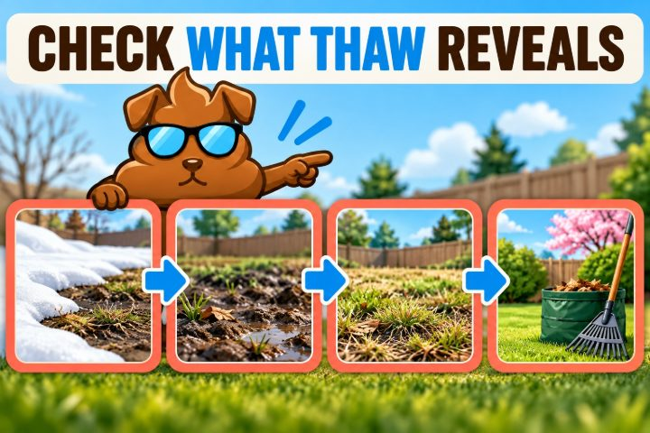
Seasonal yard careSpring Yard Cleanup After Snow: A Dog Owner’s Checklist
Work through a spring dog-owner checklist for exposed waste, soft ground, yard access, and restarting a manageable cleanup routine.
Read the guide 
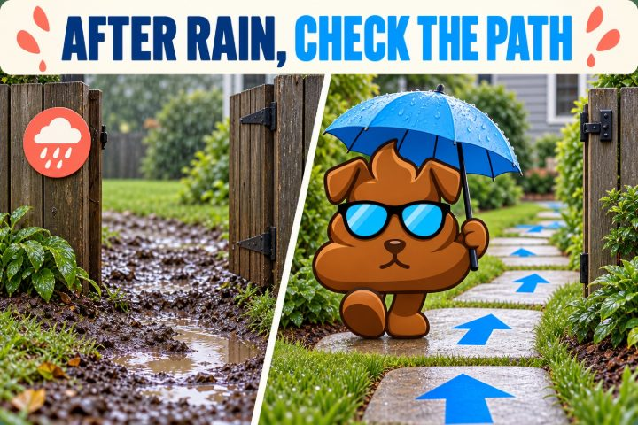
Seasonal yard careDog Poop Cleanup After Rain: Mud, Access, and Timing
Rain changes yard conditions. Learn what to check before scooping, how to describe muddy access, and why rain does not replace pickup.
Read the guide 
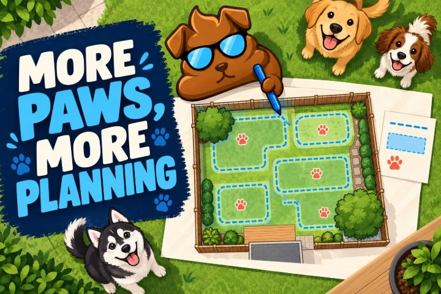
Service guidesPoop Scooping for Multiple Dogs: Plan the Right Coverage
Plan cleanup for a multi-dog household by mapping busy yard areas, reviewing visit frequency, and keeping your dog count up to date.
Read the guide 
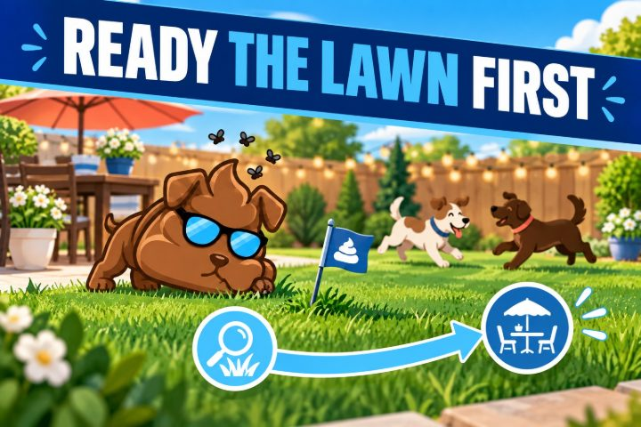
Yard careDog-Friendly Backyard Party Prep: Start With the Lawn
Prepare a dog-friendly yard for guests with a cleanup timeline, clear play areas, pet arrangements, and realistic service scheduling.
Read the guide 
 Yard care
Yard care
Moving With Dogs? Add Yard Cleanup to Your Checklist
Coordinate dog waste cleanup at your old and new home, with clear property details, service dates, and a practical move-out checklist.
Read the guide 
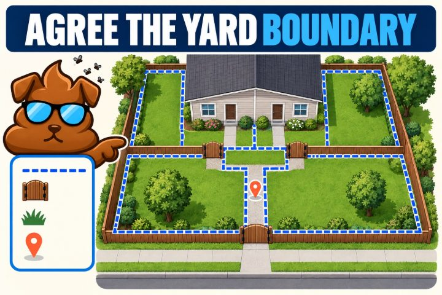
Property guidesDog Waste Cleanup for Rental Homes and Shared Yards
Clarify yard boundaries, access, communication, and cleanup responsibility when arranging dog waste removal for a rental property.
Read the guide 
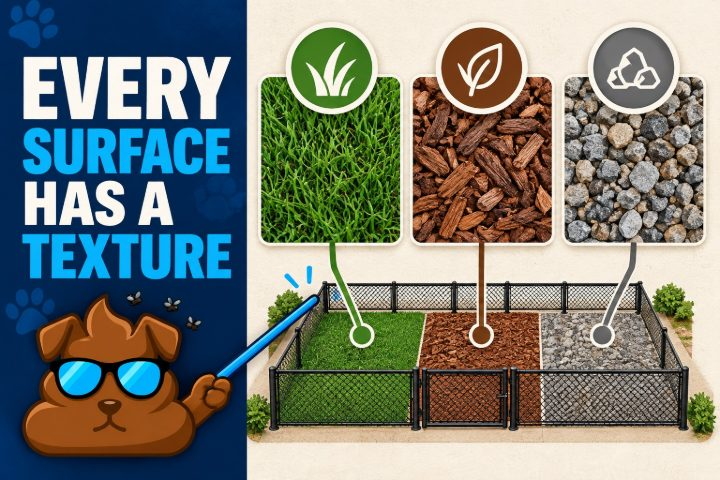
Yard careDog Poop Cleanup on Gravel, Mulch, and Dog Runs
Different yard surfaces need different cleanup expectations. Plan scooping for gravel, mulch, grass, and narrow dog runs.
Read the guide 
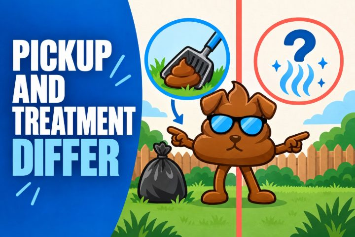
Yard careYard Odor: Poop Removal vs. Deodorizing Explained
Understand the difference between collecting dog waste and discussing odor treatment, including surface details and product questions.
Read the guide 
 Service guides
Service guides
How to Choose a Pooper Scooper Service in Indianapolis
Compare dog waste services by scope, pricing, communication, gate procedures, and cancellation terms before choosing a provider.
Read the guide 
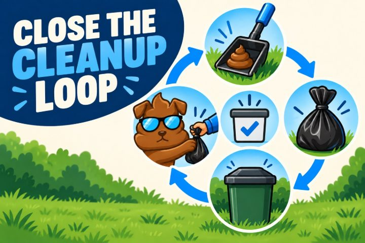
Yard careAfter You Scoop: Dog Waste Bags, Bins, and Disposal
Build a practical pickup and disposal routine with sealed bags, a suitable bin, local collection rules, and clear service expectations.
Read the guide 
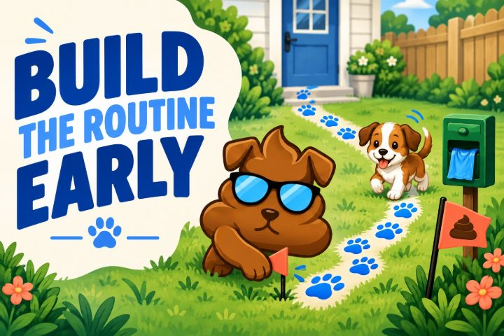
Yard careA Yard Cleanup Routine for a New Puppy
Set up an easy yard cleanup routine for life with a puppy, including useful supplies, clear yard areas, and help between busy days.
Read the guide 
 Yard care
Yard care
Dog Waste Cleanup for Busy Families: Share the Yard
Make a shared family yard easier to use with defined cleanup tasks, clear service areas, and a routine that fits busy weeks.
Read the guide 
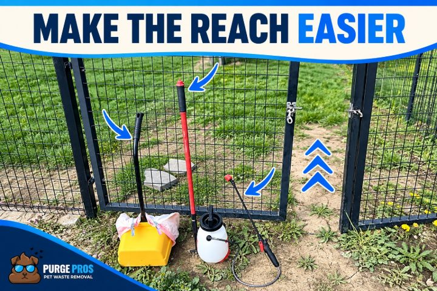
Yard careWant Less Bending and Scooping? Plan Easier Yard Upkeep
Reduce the hands-on work of yard cleanup with practical access choices, long-handled tools, and clearly defined professional service.
Read the guide 
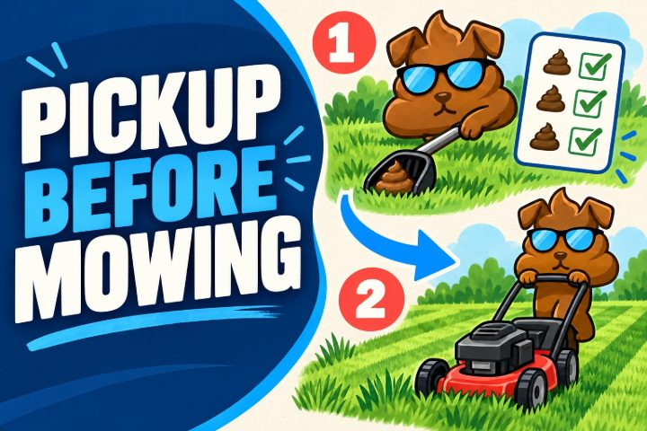
Yard careShould You Pick Up Dog Poop Before Mowing?
Plan dog waste pickup before lawn mowing, coordinate separate providers, and keep cleanup tools and yard access organized.
Read the guide 
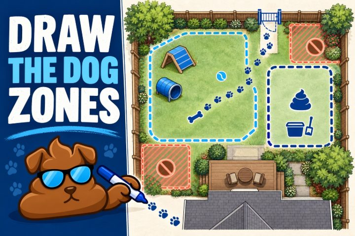
Yard careA Practical Backyard Layout for Dogs, Play, and Cleanup
Think through dog-use areas, play space, gates, and cleanup access without redesigning your entire yard or buying expensive equipment.
Read the guide 
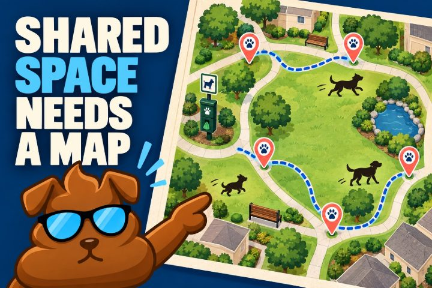
Property guidesDog Waste Removal for HOAs and Shared Green Spaces
Build a useful cleanup scope for an HOA or shared property: map the areas, assign access, clarify responsibilities, and request a custom plan.
Read the guide 
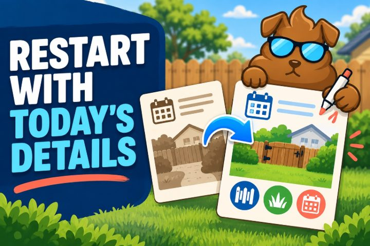
Service guidesRestarting Dog Poop Service: What Returning Customers Need
Learn what to share when restarting cleanup, how yard condition affects the first visit, and how returning-customer pricing works.
Read the guide 
Did not find your answer?
Ask us: text (317) 961-5865 or call. Or look through the questions we hear most.

Ready for fetch.
Done reading?
Hand off the scooping. Keep the dog.
Every guide here is yours to use. If you would rather not scoop at all, that part is our job.
Where to next
 Dog waste removal
Dog waste removal Sanitizing and deodorizing
Sanitizing and deodorizing- Service areas
 Questions and answers
Questions and answers- Google reviews
 Why Purge Pros
Why Purge Pros
 Homework optional. I already read them all.
Homework optional. I already read them all.